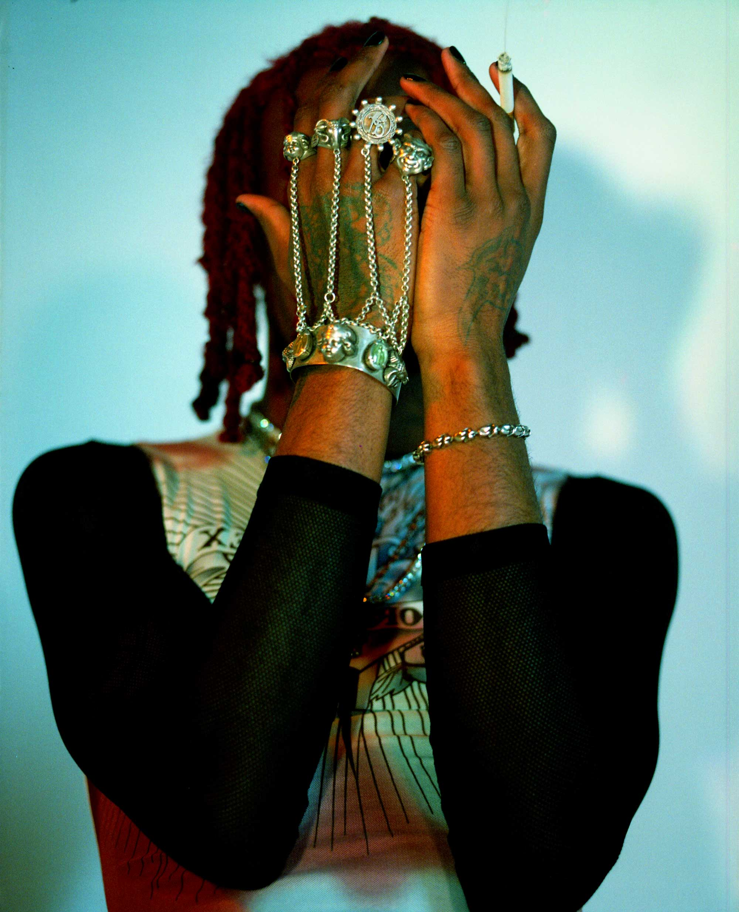
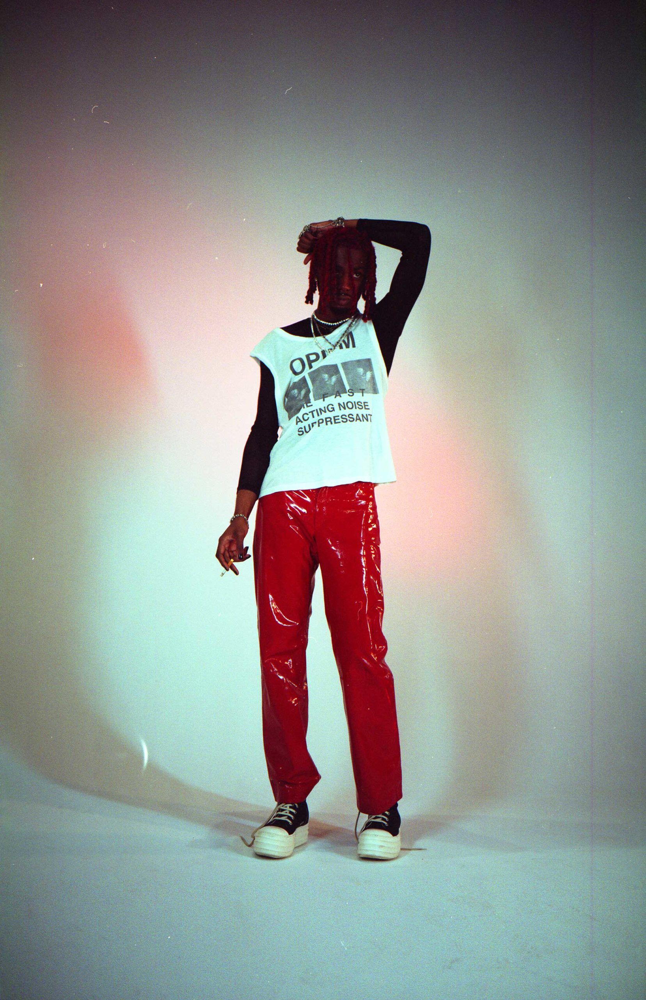

“K-I-N-G-V-A-M-P. Yeah, that’s me.” More than two years after the 2018 release of his debut album Die Lit, Playboi Carti has reemerged from the shadows as rap’s self-proclaimed vampire rock-star. That image he has cultivated—a nocturnal being with a taste for blood and black leather—is all over his long-awaited, endlessly hyped sophomore record Whole Lotta Red, which was finally released last Christmas, ending breathless online speculation as to its whereabouts. A product of the Soundcloud generation of rappers who made experimentation their calling card, the 24-year-old Atlanta native, born Jordan Carter, has ascended to hip-hop’s A-list on the strength of his delivery (his vocal register can careen from guttural shrieks to helium squeaks on the same track) and his exhilarating taste in beats (executive produced by Kanye West, Whole Lotta Red features 23 different producers). Late one night, he connected with the rapper and actor Kid Cudi, who appears with Carti on the song “M3tamorphosis,” to explain the method behind his monster madness.
PLAYBOI CARTI: What’s up, boy?
KID CUDI: Ain’t shit, man. How you doing, baby?
CARTI: I’m good. Just happy to talk to my boy.
CUDI: You ready to get into it? What was it like coming up in the Atlanta hip-hop scene? What makes it so unique?
CARTI: Shit, coming up in Atlanta, we had all the OGs out here going crazy. Gucci Mane, Jeezy, Shawty Lo, all the Atlanta legends. Hearing music like that made me want to go to the studio.
CUDI: Has Atlanta influenced your sound or have you used it as a jumping-off point to create something different? I feel like your shit definitely has a little bit of that sound, but it’s also some new shit.
CARTI: Atlanta gave me my swag and the confidence to be able to make that new shit you’re talking about. In Atlanta, you can be yourself. Once I figured that out, that’s when I started getting experimental. I figured, “I’m going to come like this, and they got to love me for who I am.”
CUDI: What was your goal with this new record? Did you feel pressure to put it out?
CARTI: The only pressure was picking which songs to include. Other than that, my goal with this album was the same as always: to make this shit sound good onstage. When I’m in the studio, bro, the only thing I’m thinking about is performing. I’m trying to make music that moves people.
CUDI: That’s all I was thinking about with my last album [2020’s Man on the Moon III: The Chosen], too—the fucking show. That’s the best part of being an artist, if you ask me, because that’s when you really see the reaction.
CARTI: Real shit.

CUDI: Whole Lotta Red debuted at number one on the charts. What does that mean to you?
CARTI: When it happened, the first thing I did was call my mom. I’m going to be honest with you, big bro. I can’t even tell you where my last album charted at. The reason I think I got a whiff of it this time was because I knew. You feel me? It’s never my goal, but it’s a blessing, like, “What the fuck? I’m capable of doing that?”
CUDI: That’s what’s up, man. You deserve it. This is so clearly a turn-up record. How’d you feel about releasing it when people can’t turn up together?
CARTI: It drives me crazy, honestly, but I’m giving them time to marinate. By the time I start performing this motherfucker, they’re going to know every word. If you don’t understand now, you will later.
CUDI: What are your must-haves when you’re recording in the studio? What’s the vibe?
CARTI: You remember that mic I told you I like?
CUDI: That expensive-ass mic?
CARTI: Yeah, that’s just been added to my shit. Other than that, it’s loud speakers and Diptyque candles, you already know. I’ve also gotta have my weed, my cigs, and, you know, the vibes.
CUDI: Talk about your vocal style, which stands apart from other rappers. Is it premeditated or is it just something you come up with in the moment?
CARTI: I’m right there in the moment. Everything is freestyle. Shout out Lil Wayne. I use whatever I bring with me that day. If something is stressing me out, I’ll come to dish that. If I’ve been hanging around my street, I’ll make street shit that day. No matter the vibe of that day, that’s how I come.
CUDI: You worked with 23 producers on this album. Why do you work with that many producers on a single album?
CARTI: You got rappers who like being around rappers, and then you got rappers like me who like being around producers. I’m always looking for that new sound. I’m a producer-head. That’s what I love. And I’m never stuck on one producer, either. We’re only getting older, and I like having young niggas around to tell me what’s fire right now. I ain’t never dropping that album without popping a new producer or giving a producer who’s been going crazy his spotlight. So it was normal to me.
CUDI: Ye executive produced this record. Talk about working with him. What did he bring to the project?
CARTI: Kanye is the OG. He opened my eyes to some shit. When I got around him, I realized why I love him so much. You get what I’m saying? When I get around you, I realize why I love you so much. I even appreciate Ye for introducing me and you. Being able to talk to somebody who understands what I’m saying, I got that from his whole camp. I felt that energy from everybody he deals with. I didn’t feel like a loner. The world I’m trying to build, he already got it going on. Ye is on this king vamp shit. Cudi is on this king vamp shit. Y’all already on that.
CUDI: Ye is the ultimate big bro. He’s someone good to have in your corner.
CARTI: All family vibes.
CUDI: Who do you think your fans are? Who are you making music for?
CARTI: My fans are the most loyal motherfuckers in the world. I make worldwide music. It’s not just for the States. If I look at your shit or Ye’s shit, or all the other great artists, y’all never did nothing that somebody else did. That’s the only route I can go by. I’ve got my diehard fans, I got my young Carti fans, I got my new Carti fans, and I’m just trying to put them all together and show them, “Yo, don’t ever think you got me figured out.”
CUDI: Keep them on their toes. Do you see yourself as a rapper or something else entirely?
CARTI: Full rock-star. Hip-hop is my category, for sure, but I’m full rock-star. I make music for people who feel themselves. I make music for models. I make music for young niggas in high school trying to get a new girlfriend. I make music for a young nigga before his basketball game in the locker room. I make music for a motherfucker who got down smoking too much weed and now he’s in his head about shit. I make music for all of them. There’s no lid on my shit.
CUDI: Talk about how punk music has influenced you.
CARTI: I’m a big, big, fan of punk artists like Sid Vicious. I keep up with a lot of shit when it comes to that era, from the music to the lifestyle. I just feel like my lifestyle is so rocked out. This is the lifestyle I live, and I ain’t no damn poser, now.
CUDI: Talk about the link between your visuals—the way you dress, the way your videos look—and your sound.
CARTI: Big bro, this shit that I do is not just for the ’gram. It’s not just to make people think I’m weird. This is really me. I get a lot of my inspiration from vampire movies, because when you see a vampire, he always looks good. He don’t age. He can’t die. He’s beautiful. I won Best Dressed in high school. That’s what I was on. I did the streetwear shit. Now let’s see if I can pop this shit that they’re wearing on the runway. If it’s a challenge, I’m doing it.
CUDI: Do you ever get outside pressure to make music that appeals to radio or that might have crossover appeal? And if so, how do you respond to that?
CARTI: I’m not a pop artist. The fans are going to choose the hits. I’ve been going with that formula since my first tape. That’s the vibe. It’s nothing like, “I’m in that bitch with six writers and shit. We’re working on a song for two months.” Hell no.
CARTI: My last drop, I had a lot of features. Whole Lotta Red is about me. People that I did choose on this album are people that I never thought would fuck with me. I had to work to get to where I’m at, and these are the people I’m trying to impress, the people I want the cosign from. I got Future, I got Cudi, I got Ye. I’m fucking with the originals, the motherfucking godfathers of this shit. Who else you need on the album after that?